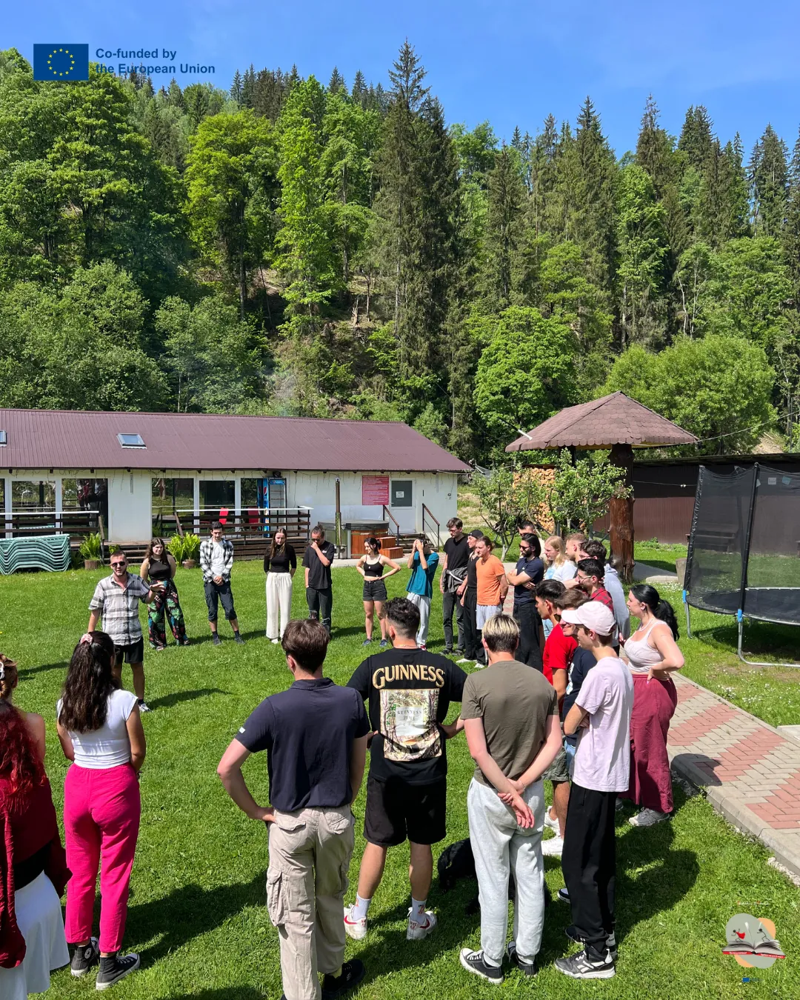
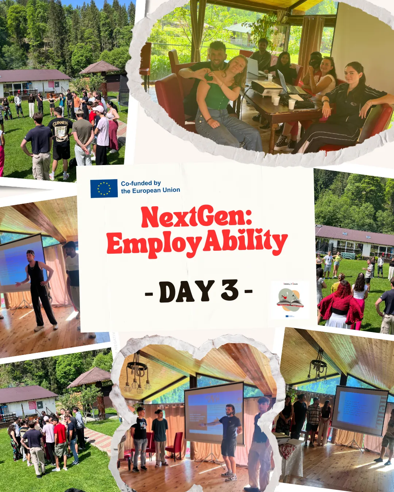
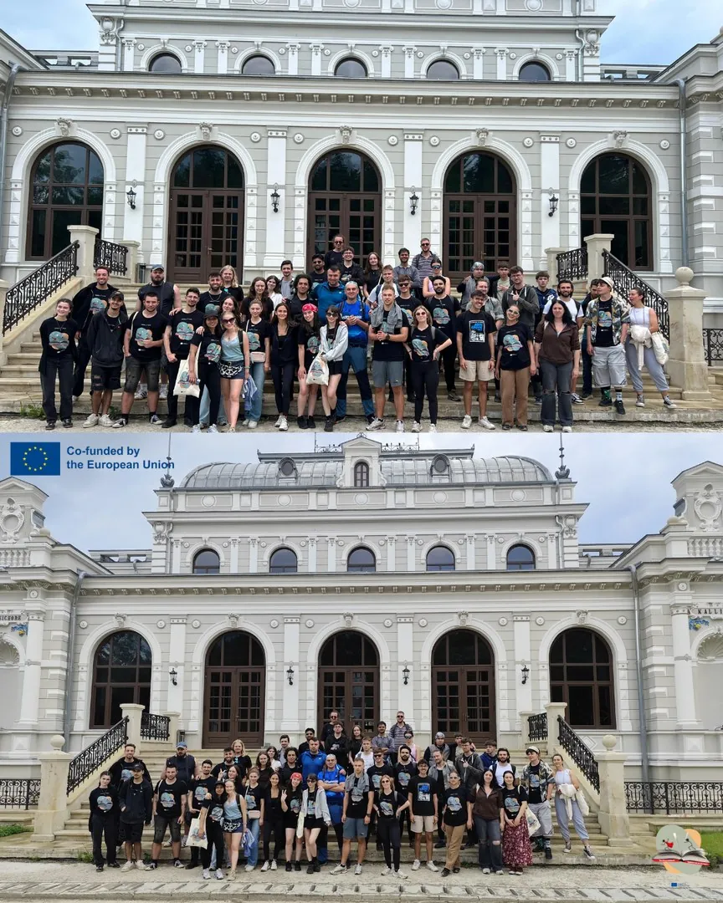

NextGEN · personal and professional development through hands-on learning
EmployAbility
Employability
Everything nobody teaches you about the world of work, discovered through practical exercises, feedback and plenty of reflection.



JUN 2025NextGEN
Description
In the second year, through NextGEN, the Employability activity deepened skills through practical exercises, work in international teams, simulations, presentations, reflection and tools for personal and professional development.
Participants developed communication, teamwork, critical thinking, reflection, self-confidence, initiative, adaptability, intercultural cooperation and the ability to plan their educational and professional future more consciously.
- Dates
- 2–12 June 2025
- Place
- Argestru, Vatra Dornei, Romania
- Framework
- AIS Erasmus+ Accreditation
- Stage
- Year 2
- Programme
- NextGEN
- Erasmus+ project
- 2024-1-RO01-KA151-YOU-000218341
3Photos
Photos · EmployAbility
JUN 2025From the project sheet
Building Skills for a Better Professional Future
people
countries
young participants
young people with fewer opportunities
From 2 to 12 June 2025, Asociația Inițiative Sociale (AIS) hosted the international youth exchange “NextGEN: EmployAbility” (A4) in Argestru, Vatra Dornei, Romania. It was the fourth mobility carried out under the Erasmus+ accreditation in the field of youth (2022-1-RO01-KA150-YOU-000110034), through project 2024-1-RO01-KA151-YOU-000218341.
The mobility brought together 54 people from 7 countries (Bulgaria, Czechia, Greece, Italy, Poland, Romania and Turkey): 45 young people, 7 group leaders and 2 facilitators. Inclusion was a priority: 13 young people with fewer opportunities took part (28.9% of all young participants), including young people facing economic, social or geographical obstacles or difficulties entering the job market.
The main aim of the mobility was to develop employability skills and improve young people’s chances of entering the labour market, through non-formal education, experiential learning and intercultural cooperation.
The project set out to develop communication, adaptability, teamwork, critical thinking, creativity and problem-solving skills, and to increase young people’s confidence in their own professional abilities.
Over 9 days of educational activities, the participants took part in interactive workshops, simulations, role play, debates, presentations, case studies, outdoor activities, reflection and participatory evaluation.
The programme included sessions on young people’s situation on the labour market in the seven countries (Europe vs Our Country), work culture and equal opportunities (Culture of Work: Opportunities & Inclusion), and self-awareness and career guidance (Skill Map – IKIGAI & SWOT).
Special emphasis was placed on practical preparation for recruitment: identifying personal and professional skills, making CVs and Video CVs, building a personal brand and practising job interviews (The Interview).
One of the central activities was the “NextGEN: Hackathon”, where participants worked in multicultural teams to find innovative solutions to the challenges of youth unemployment. It encouraged creativity, critical thinking, communication, collaboration and the ability to turn ideas into practical solutions.
The programme also included a study visit in the Vatra Dornei community, giving participants the chance to discover local economic activities and better understand the skills needed in different sectors.
Intercultural evenings, reflection activities and sessions on Erasmus+ and Youthpass completed the learning process.
A4 produced educational results and practical tools, developed with the direct involvement of the participants:
- 7 national presentations and case studies on youth unemployment, employability challenges and job opportunities;
- 45 young people involved in career guidance, self-awareness, SWOT analysis and skills identification activities;
- practical exercises in making CVs and Video CVs, interview preparation and professional self-presentation;
- 1 international Hackathon dedicated to finding solutions to youth unemployment;
- 6 educational tools developed in multicultural teams: a Social Media Reel, the board game Hire Me, the interactive game Cupping Dart, a Digital Booklet, a Treasure Hunt and a Digital Quiz;
- 1 A4 educational brochure, photos, videos, presentations and testimonials;
- 6 national dissemination reports, prepared by the international partner organisations.
Through these activities, the participants developed their skills in professional communication, teamwork, leadership, critical thinking, creativity, adaptability and using digital tools.
Making video CVs and taking part in mock interviews improved their self-presentation, while the career guidance activities helped them identify their strengths, interests and development opportunities.
The 45 young people had the skills they gained recognised with the Youthpass certificate, which was also used during the mobility for reflection and self-assessment.
The mobility was coordinated by AIS together with its 6 international partner organisations, through a structured system of planning, implementation, monitoring and evaluation.
Preparation included selecting and informing the participants, designing the educational programme, arranging travel and accommodation at Pensiunea Siady in Argestru, Vatra Dornei, and preparing learning and visibility materials.
During the mobility, meetings with group leaders, daily reflections and the initial, mid-term and final evaluations made it possible to monitor learning progress, spot difficulties and adapt the activities to the participants’ needs.
Special attention was paid to including young people with fewer opportunities, active participation, safety and environmentally responsible practices.
The post-mobility evaluation, based on 52 completed questionnaires, showed a high level of satisfaction and positive contributions to personal and professional development.
Key evaluation indicators:
- 4.21 out of 5 points – overall satisfaction with the Erasmus+ experience.
- 3.87 out of 5 points – perceived contribution to personal development.
- 38 of 52 respondents (73.1%) noticed positive personal changes after taking part.
- 47 of 52 respondents (90.4%) said the interview preparation activities helped them feel more ready for real interviews.
- 45 of 52 respondents (86.5%) found the Video CV a useful recruitment tool.
- 41 of 52 respondents (78.8%) said the Skill Map – IKIGAI & SWOT activity helped them better understand their skills and development needs.
- 47 of 52 respondents (90.4%) confirmed that the Hackathon motivated them to be more proactive about their careers.
- 48 of 52 respondents (92.3%) valued the activities on work culture, inclusion and job opportunities.
- 50 of 52 respondents (96.2%) said they would like to take part in similar projects.
One of the most important results of A4 was that participants used the skills they gained in their careers after the mobility ended.
The 52 responses collected after the mobility showed the following professional outcomes:
- 6 people got a full-time job;
- 2 people got a part-time job;
- 3 people found internships or volunteering opportunities;
- 4 people said they were invited to at least one real job interview, without separately confirming they attended;
- 10 people said they were actively looking for work, without stating how many applications they had sent.
In total, 8 respondents (15.4%) reported getting a job after the mobility, and others found internships or volunteering opportunities or reached the interview stage of a recruitment process.
These results show concrete professional progress and the relevance of the skills developed in the project. Getting a job and accessing opportunities can also depend on external factors, but the A4 experience gave participants practical tools for selection and recruitment processes.
Feedback from the group leaders confirmed the relevance of the mobility: 6 of the 7 leaders said they were “Very satisfied” and one “Satisfied”.
All seven leaders felt the participants had clarified their career aspirations, five saw better job prospects, and six felt the young people were better prepared to continue education or training.
The partner organisations’ evaluation confirmed the quality of implementation, rating the overall organisation of the mobility 5 out of 5.
A4 also grew the AIS international network through two new partner organisations, 4C from Greece and GEGEDER from Turkey, strengthening cooperation and the exchange of good practice on youth employability.
The results of A4 were promoted through the NextGEN blog, social media, the educational brochure, public presentations, workshops and multiplier events organised by participants and partner organisations.
For A4, 8 post-mobility information and dissemination sessions were documented, with 172 reported attendances in total, at activities organised by partners and participants from Greece, Turkey, Poland, Czechia, Italy and Romania.
Highlights include presentations and workshops in Greece (17 attendances), a session led by a participant from Turkey at a youth exchange in Bulgaria (48 attendances), a workshop by DGT Polska for 32 youth workers, two presentations in Czechia (20 attendances), an activity at the University of Cagliari, Italy (10 attendances) and a session run by three A4 participants at a youth exchange in Romania (45 attendances).
An important promotion and dissemination event was organised by AIS at the “George Emil Palade” High School in Constanța in April 2025, with 30 participants. It was a joint A3+A4 event, combining a presentation of the experiences and learning results of A3 with promotion of the theme, objectives and participation opportunities of the A4 mobility, planned for June.
Offline dissemination was complemented by posts on Facebook, Instagram, LinkedIn and other digital platforms, plus articles, photos, testimonials and videos made by participants, raising the visibility of Erasmus+ and promoting employability skills in the partner communities.
A4 video testimonials: https://www.youtube.com/watch?v=3z23c1K7dyI
“NextGEN: EmployAbility” was an important stage in implementing the Erasmus+ accreditation of Asociația Inițiative Sociale, helping to develop employability skills, promote social inclusion and intercultural cooperation, and strengthen international partnerships.
Through the involvement of 54 people from 7 countries, the 6 educational tools, the career guidance activities, the mock interviews and the positive evaluation results, the mobility showed the value of non-formal education in preparing young people for the challenges of the labour market.
The 8 jobs reported after the mobility, together with the internship and volunteering opportunities, interview invitations and professional skills developed, are meaningful results of the participants’ professional progress.
The A4 experience confirms how important it is to keep investing in non-formal education, career guidance and the skills young people need for fair access to work and personal development opportunities.
The story continues! Together we are stronger!